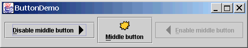
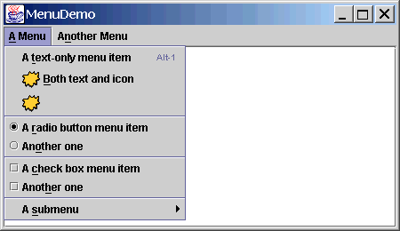
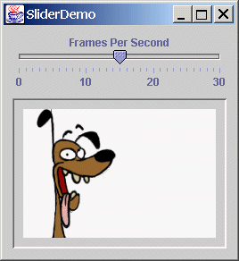

BY James Jianbo Huang
October 2001
Abstract
Building GUI applications in JudoScript is achieved by its superb capability
of using Java classes and the event handler statement, gui::events.
GUI components are created and glued together in JudoScript. Embedded Java
class and adapter are important mechanisms to create new components.
If they are to be re-used, they can reside in their own source file.
Modern GUI systems are the best examples of object-based systems, where
GUI components are encapsulated in reusable classes and used in a cohesive
event-driven framework. GUI programs become assemblies of components.
There is no significant differences whether those components are glued by
Java or other languages like JudoScript.
The following is the simplest Java Swing GUI writtin in JudoScript.
It demonstrates two key elements in JudoScript GUI programming: a) invoking
Java classes to assemble the GUI, and b) GUI event handling.
| Listing 1. SimplestGUI.judo |
1: const #JFrame = javaclass javax.swing.JFrame;
2:
3: frame = javanew #JFrame("Simplest GUI");
4: frame.setVisible(true);
5:
6: gui::events {
7: <frame : Window : windowClosing> : exit(0);
8: }
|
Line 2 establishes a javax.swing.JFrame frame and make it
visible on line 3. Lines 6 through 8 is a event handler. Line 7 basically
reads: component frame listens for Window
events and handles the windowClosing message. As you see,
JudoScript provides a new way of specifying your GUI application but does not
introduce any new GUI concepts; all it does is supporting the underlying
Java GUI packages. Therefore, you should be well familiar with Java GUI
programming in order to do GUI programming in JudoScript, and Java AWT/Swing
programming is not covered here; you can find many literatures on these.
So why JudoScript GUI? Two possiblities. The first possibility is you just want
to. JudoScript programs are more direct, intuitive, and there are so many
applications features ready for use. JudoScript supports threads, embedded Java
classes and Java interface adapters, there is no limitation to building
GUI applications. The other possibility is to have a GUI for tools
implementing in JudoScript. The following is another example.
| Listing 2. ButtonDemo.judo |
1: !JavaGuiClass #JFrame, #JPanel, #JLabel, #JButton
2: !JavaGuiClass #ImageIcon, #AbstractButton, #KeyEvent, #BorderLayout
3:
4: leftButtonIcon = javanew #ImageIcon("images/right.gif");
5: middleButtonIcon = javanew #ImageIcon("images/middle.gif");
6: rightButtonIcon = javanew #ImageIcon("images/left.gif");
7:
8: b1 = javanew #JButton("Disable middle button", leftButtonIcon);
9: b1.setVerticalTextPosition(#AbstractButton.CENTER);
10: b1.setHorizontalTextPosition(#AbstractButton.LEFT);
11: b1.setMnemonic(#KeyEvent.VK_D);
12: b1.setActionCommand("disable");
13:
14: b2 = javanew #JButton("Middle button", middleButtonIcon);
15: b2.setVerticalTextPosition(#AbstractButton.BOTTOM);
16: b2.setHorizontalTextPosition(#AbstractButton.CENTER);
17: b2.setMnemonic(#KeyEvent.VK_M);
18:
19: b3 = javanew #JButton("Enable middle button", rightButtonIcon);
20: b3.setMnemonic(#KeyEvent.VK_E);
21: b3.setActionCommand("enable");
22: b3.setEnabled(false);
23:
24: b1.setToolTipText("Click this button to disable the middle button.");
25: b2.setToolTipText("This middle button does nothing when you click it.");
26: b3.setToolTipText("Click this button to enable the middle button.");
27:
28: demo = javanew #JPanel;
29: demo.add(b1);
30: demo.add(b2);
31: demo.add(b3);
32:
33: frame = javanew #JFrame("ButtonDemo");
34: frame.getContentPane().add(demo, #BorderLayout.CENTER);
35:
36: gui::events {
37: :
38: local isDisable = ($_.getActionCommand() == 'disable');
39: b1.setEnabled(!isDisable);
40: b2.setEnabled(!isDisable);
41: b3.setEnabled( isDisable);
42:
43: : exit(0);
44: }
45:
46: frame.pack();
47: frame.setVisible(true);
|

This program sets up three buttons; when the left one is clicked, it
disables the middle one (which has a image), and the right button does
the opposite. The middle button does nothing. In lines 37 through 41,
both left and right buttons b1 and b3 share a same
event handler. GUI programs tend to have many lines but most of them
are rather simple statements. The crux is event handling.
Review Questions
- How are GUI applications constructed in JudoScript?
- Do you need to learn a new paradigm for building GUI
applications in JudoScript? What you must know?
»»» Top «««
GUI programs typically involve large number of Java classes. Declaring
them one by one is tedious, because they spread across many different
packages. JudoScript provides a mechanism called standard Java class declaration
shortcut, which are three directives used to easily declare a large
number of standard J2SE and J2EE classes:
!JavaBaseClass #System, #Hashtable, #Dimension
!JavaGuiClass #JFrame, #JPanel, #Color, #ActionListener
!JavaEnterpriseClass #HttpServletRequest, #EJBObject, #EJBContext
See the other article for more information.
»»» Top «««
gui::events is an event-driven statement for specifying event
handlers. It may appear multiple times in a program. Each handler has a
label and a series of statements associated. The gui::events
statements for specified components must follow the code that the
components are created. The label has three parts (line 37 in
listing 0): the first part is one or more origins of
the event; the second is the event type; the last is one or more messages
of that type of event. The event type corresponds to a Java listener
interface (such as java.awt.event.ActionListener), and the
messages are its methods. All the GUI event messages have one parameter,
an instance that extends java.util.EventObject, which is
stored in the internal variable $_ (line 38).
When multiple components share a same handler, use $_.getSource()
or other more specific methods to find out where the current event is
from. Multiple messages can share a same handler, too, for instance,
a common handler may be specified for mouseEntered() and
mouseExited(). Use $_.getID() or other more specific
methods to find out the type of message for the current event.
Sometimes event handlers are applied to variable components such as menu
items, so the first part of the message label (components) do not make
any sense. In this case, use a name followed by ? in place of
the components to define a named event handler, then use the
setGuiListner() system function to associate a handler with a
component, as shown in the following program. If a gui::events
only has named handoers, it can appear anywhere in the code.
| Listing 3. MenuDemo.judo |
1: !JavaGuiClass #JCheckBoxMenuItem, #JFrame, #JMenu, #JMenuBar
2: !JavaGuiClass #JRadioButtonMenuItem, #JScrollPane, #JTextArea
3: !JavaGuiClass #ActionEvent, #BorderLayout, #ButtonGroup, #ImageIcon
4: !JavaGuiClass #ItemEvent, #KeyEvent, #KeyStroke, #JMenuItem
5:
6: demoFrame = javanew #JFrame('MenuDemo');
7: gui::events { <demoFrame : Window : windowClosing> : exit(0); }
8:
9: //Add regular components to the window, using the default BorderLayout.
10: contentPane = demoFrame.getContentPane();
11: $output = javanew #JTextArea(5, 30);
12: $output.setEditable(false);
13: scrollPane = javanew #JScrollPane($output);
14: contentPane.add(scrollPane, #BorderLayout.CENTER);
15:
16: //Create the menu bar.
17: menuBar = javanew #JMenuBar;
18: demoFrame.setJMenuBar(menuBar);
19:
20: //Build the first menu.
21: menu = javanew #JMenu("A Menu");
22: menu.setMnemonic(#KeyEvent.VK_A);
23: menu.getAccessibleContext().setAccessibleDescription(
24: "The only menu in this program that has menu items");
25: menuBar.add(menu);
26:
27: //a group of JMenuItems
28: menuItem = javanew #JMenuItem("A text-only menu item", #KeyEvent.VK_T);
29: menuItem.setAccelerator(
30: #KeyStroke.getKeyStroke(#KeyEvent.VK_1, #ActionEvent.ALT_MASK));
31: menuItem.getAccessibleContext().setAccessibleDescription(
32: "This doesn't really do anything");
33: setGuiListener(menuItem, 'ACTION');
34: menu.add(menuItem);
35:
36: menuItem = javanew #JMenuItem("Both text and icon",
37: javanew #ImageIcon("images/middle.gif"));
38: menuItem.setMnemonic(#KeyEvent.VK_B);
39: setGuiListener(menuItem, 'ACTION');
40: menu.add(menuItem);
41:
42: gui::events {
43: < ?ACTION : Action : actionPerformed> :
44: local source = $_.getSource();
45: local s = [[*
46: Action event detected.
47: Event source: (* source.getText() *)
48: (an instance of (* getClassName(source) *))
49: *]];
50: $output.append(s);
51:
52: < ?ITEM : Item : itemStateChanged> :
53: local source = $_.getSource();
54: local s = [[*
55: Item event detected.
56: Event source: (* source.getText() *)
57: (an instance of (* getClassName(source) *))
58: New state: (* (($_.getStateChange()==#ItemEvent.SELECTED)
59: ? "selected" : "unselected")
60: *)
61: *]];
62: $output.append(s);
63: }
64:
65: menuItem = javanew #JMenuItem(javanew #ImageIcon("images/middle.gif"));
66: menuItem.setMnemonic(#KeyEvent.VK_D);
67: setGuiListener(menuItem, 'ACTION');
68: menu.add(menuItem);
69:
70: //a group of radio button menu items
71: menu.addSeparator();
72:
73: $group = javanew #ButtonGroup;
74: $rbMenuItem = javanew #JRadioButtonMenuItem("A radio button menu item");
75: $rbMenuItem.setSelected(true);
76: $rbMenuItem.setMnemonic(#KeyEvent.VK_R);
77: $group.add($rbMenuItem);
78: setGuiListener($rbMenuItem, 'ACTION');
79: menu.add($rbMenuItem);
80:
81: $rbMenuItem = javanew #JRadioButtonMenuItem("Another one");
82: $rbMenuItem.setMnemonic(#KeyEvent.VK_O);
83: $group.add($rbMenuItem);
84: setGuiListener($rbMenuItem, 'ACTION');
85: menu.add($rbMenuItem);
86:
87: //a group of check box menu items
88: menu.addSeparator();
89:
90: $cbMenuItem = javanew #JCheckBoxMenuItem("A check box menu item");
91: $cbMenuItem.setMnemonic(#KeyEvent.VK_C);
92: setGuiListener($cbMenuItem, 'ITEM');
93: menu.add($cbMenuItem);
94:
95: $cbMenuItem = javanew #JCheckBoxMenuItem("Another one");
96: $cbMenuItem.setMnemonic(#KeyEvent.VK_H);
97: setGuiListener($cbMenuItem, 'ITEM');
98: menu.add($cbMenuItem);
99:
100: //a submenu
101: menu.addSeparator();
102: submenu = javanew #JMenu("A submenu");
103: submenu.setMnemonic(#KeyEvent.VK_S);
104:
105: menuItem = javanew #JMenuItem("An item in the submenu");
106: menuItem.setAccelerator(
107: #KeyStroke.getKeyStroke(#KeyEvent.VK_2, #ActionEvent.ALT_MASK));
108: setGuiListener(menuItem, 'ACTION');
109: submenu.add(menuItem);
110:
111: menuItem = javanew #JMenuItem("Another item");
112: setGuiListener(menuItem, 'ACTION');
113: submenu.add(menuItem);
114: menu.add(submenu);
115:
116: //Build second menu in the menu bar.
117: menu = javanew #JMenu("Another Menu");
118: menu.setMnemonic(#KeyEvent.VK_N);
119: menu.getAccessibleContext().setAccessibleDescription(
120: "This menu does nothing");
121: menuBar.add(menu);
122:
123: // Returns just the class name -- no package info.
124: function getClassName o {
125: classString = o.getClass().getName();
126: dotIndex = classString.lastIndexOf(".");
127: return classString.substring(dotIndex+1);
128: }
129:
130: demoFrame.setSize(450, 260);
131: demoFrame.setVisible(true);
|

First of all, we see two gui::events statements on lines 7 and 39.
Starting on lines 42 and 52, there are two named event handlers, "ACTION"
and "ITEM". On lines 33, 39, 67, 78, 84, 97, 108 and 112, the
setGuiListener() system function associates them to various
menu items.
Java Swing set has a class, javax.swing.Timer, that causes
action to occur at a predefined rate. It can take a number of
ActionListener's; in JudoScript terms, it can be associated with
event handlers for event type Action. The following slider demo
uses a timer. See line 42 and on for how it is used, and line 58 for how
its events are handled.
| Listing 4. SliderDemo.judo |
1: !JavaGuiClass #JFrame, #JLabel, #JPanel, #JSlider
2: !JavaGuiClass #Component, #ImageIcon, #BorderFactory, #BoxLayout, #Timer
3:
4: FPS_INIT = 15; //initial frames per second
5: frameNumber = 0;
6: frozen = false;
7: delay = 1000 / FPS_INIT;
8:
9: //Create the slider and its label
10: sliderLabel = javanew #JLabel("Frames Per Second", #JLabel.CENTER);
11: sliderLabel.setAlignmentX(#Component.CENTER_ALIGNMENT);
12:
13: framesPerSecond = javanew #JSlider(#JSlider.HORIZONTAL, 0, 30, FPS_INIT);
14:
15: //Turn on labels at major tick marks.
16: framesPerSecond.setMajorTickSpacing(10);
17: framesPerSecond.setMinorTickSpacing(1);
18: framesPerSecond.setPaintTicks(true);
19: framesPerSecond.setPaintLabels(true);
20: framesPerSecond.setBorder(#BorderFactory.createEmptyBorder(0,0,10,0));
21:
22: //Create the label for the animation.
23: picture = javanew #JLabel(javanew #ImageIcon(
24: "images/doggy/T" @ frameNumber @ ".gif"), #JLabel.CENTER);
25: picture.setAlignmentX(#Component.CENTER_ALIGNMENT);
26: picture.setBorder(
27: #BorderFactory.createCompoundBorder(
28: #BorderFactory.createLoweredBevelBorder(),
29: #BorderFactory.createEmptyBorder(10,10,10,10)));
30:
31: contentPane = javanew #JPanel;
32: contentPane.setLayout(javanew #BoxLayout(contentPane, #BoxLayout.Y_AXIS));
33: contentPane.add(sliderLabel);
34: contentPane.add(framesPerSecond);
35: contentPane.add(picture);
36: contentPane.setBorder(#BorderFactory.createEmptyBorder(10,10,10,10));
37:
38: demoFrame = javanew #JFrame("SliderDemo");
39: demoFrame.setContentPane(contentPane);
40:
41: //Set up a timer that calls this object's action handler.
42: timer = javanew #Timer(delay, timerHandler());
43: timer.setInitialDelay(delay * 10); //pauses animation after frames
44: //0 and 6 by restarting the timer
45: timer.setCoalesce(true);
46:
47: function startAnimation {
48: timer.start();
49: frozen = false;
50: }
51:
52: function stopAnimation {
53: timer.stop();
54: frozen = true;
55: }
56:
57: gui::events {
58: <timer : Action : actionPerformed> :
59: local source = $_.getSource();
60: //Advance the animation frame.
61: if frameNumber==13 { frameNumber = 0; }
62: else { ++frameNumber; }
63: picture.setIcon(javanew #ImageIcon(
64: "images/doggy/T" @ frameNumber @ ".gif"));
65: if (frameNumber==0) || (frameNumber==6) {
66: timer.restart();
67: }
68:
69: <framesPerSecond : Change : stateChanged> :
70: local source = $_.getSource();
71: if !source.getValueIsAdjusting() {
72: local fps = source.getValue();
73: if fps == 0 {
74: if !frozen { stopAnimation(); }
75: } else {
76: delay = 1000 / fps;
77: timer.setDelay(delay);
78: timer.setInitialDelay(delay * 10);
79: if frozen { startAnimation(); }
80: }
81: }
82:
83: <demoFrame : Window : windowIconified> : stopAnimation();
84: <demoFrame : Window : windowDeiconified> : startAnimation();
85: <demoFrame : Window : windowClosing> : exit(0);
86: }
87:
88: demoFrame.pack();
89: demoFrame.setVisible(true);
90: startAnimation();
|

The funny dog sways back and forth; shifting the nob of the slider control
changes its speed.
Review Questions
- What is the variable for the parameter of an event message?
- An event handler can be specified for multiple components and/or
multiple messages. How to find out which component has generated
which message?
- Why named handlers are needed? How to apply them?
- How to handle events generated by a timer object?
»»» Top «««
Look at the screen of the next program. There are two rulers; a button in
the upper-left corner toggles the rules between inches and cm's. The rulers
are new components not found in the standard Swing packages, and the
scrolling pane responds to them. Such custom components are create by
extending base components. The only way to extend Java classes in JudoScript is
through embedded Java. Embedded Java classes (lines 5, 13 and 121) are
contained in the script, since at this moment nobody cares about them
beyond the script itself. See the other article
for more on embedded Java classes in JudoScript.

| Listing 5. ScrollDemo.judo |
1: !JavaGuiClass #JFrame, #JPanel, #JScrollPane, #JToggleButton
2: !JavaGuiClass #ImageIcon, #Font, #Insets, #Dimension, #BorderFactory
3: !JavaGuiClass #Color, #BoxLayout, #ItemEvent
4:
5: !JavaClass
6: public final class Corner extends javax.swing.JComponent {
7: public void paintComponent(java.awt.Graphics g) {
8: g.setColor(new java.awt.Color(230, 163, 4));
9: g.fillRect(0, 0, getWidth(), getHeight());
10: }
11: }
12:
13: !JavaClass
14: import java.awt.*;
15: import javax.swing.*;
16:
17: public final class Rule extends JComponent {
18: public static final int INCH =
19: Toolkit.getDefaultToolkit().getScreenResolution();
20: public static final int HORIZONTAL = 0;
21: public static final int VERTICAL = 1;
22: public static final int SIZE = 35;
23:
24: public int orientation;
25: public boolean isMetric;
26: private int increment;
27: private int units;
28:
29: public Rule(int o, boolean m) {
30: orientation = o;
31: isMetric = m;
32: setIncrementAndUnits();
33: }
34:
35: public void setIsMetric(boolean isMetric) {
36: this.isMetric = isMetric;
37: setIncrementAndUnits();
38: repaint();
39: }
40:
41: private void setIncrementAndUnits() {
42: if (isMetric) {
43: units = (int)((double)INCH / (double)2.54); // dots per CMs
44: increment = units;
45: } else {
46: units = INCH;
47: increment = units / 2;
48: }
49: }
50:
51: public boolean isMetric() { return this.isMetric; }
52: public int getIncrement() { return increment; }
53: public void setPreferredHeight(int ph) {
54: setPreferredSize(new Dimension(SIZE,ph));
55: }
56: public void setPreferredWidth(int pw) {
57: setPreferredSize(new Dimension(pw,SIZE));
58: }
59:
60: public void paintComponent(Graphics g) {
61: Rectangle drawHere = g.getClipBounds();
62:
63: // Fill clipping area with dirty brown/orange.
64: g.setColor(new Color(230, 163, 4));
65: g.fillRect(drawHere.x, drawHere.y, drawHere.width, drawHere.height);
66:
67: // Do the ruler labels in a small font that's black.
68: g.setFont(new Font("SansSerif", Font.PLAIN, 10));
69: g.setColor(Color.black);
70:
71: // Some vars we need.
72: int end = 0;
73: int start = 0;
74: int tickLength = 0;
75: String text = null;
76:
77: // Use clipping bounds to calculate first and last tick location
78: if (orientation == HORIZONTAL) {
79: start = (drawHere.x/increment)*increment;
80: end = (((drawHere.x+drawHere.width)/increment)+1)*increment;
81: } else {
82: start = (drawHere.y/increment) * increment;
83: end = (((drawHere.y+drawHere.height)/increment)+1)*increment;
84: }
85:
86: // Make a special case of 0 to display the number
87: // within the rule and draw a units label.
88: if (start == 0) {
89: text = Integer.toString(0) + (isMetric ? " cm" : " in");
90: tickLength = 10;
91: if (orientation == HORIZONTAL) {
92: g.drawLine(0, SIZE-1, 0, SIZE-tickLength-1);
93: g.drawString(text, 2, 21);
94: } else {
95: g.drawLine(SIZE-1, 0, SIZE-tickLength-1, 0);
96: g.drawString(text, 9, 10);
97: }
98: text = null;
99: start = increment;
100: }
101:
102: // ticks and labels
103: for (int i = start; i < end; i += increment) {
104: if (i % units == 0) {
105: tickLength = 10;
106: text = Integer.toString(i/units);
107: } else {
108: tickLength = 7;
109: text = null;
110: }
111:
112: if (tickLength != 0) {
113: if (orientation == HORIZONTAL) {
114: g.drawLine(i, SIZE-1, i, SIZE-tickLength-1);
115: if (text != null) g.drawString(text, i-3, 21);
116: } else {
117: g.drawLine(SIZE-1, i, SIZE-tickLength-1, i);
118: if (text != null) g.drawString(text, 9, i+3);
119: }
120: }
121: }
122: }
123:
124: } // end of java class Rule.
125:
126: !JavaClass
127: import java.awt.*;
128: import java.awt.event.*;
129: import javax.swing.*;
130: import javax.swing.border.*;
131:
132: public class ScrollablePicture extends JLabel implements Scrollable
133: {
134: private int maxUnitIncrement = 1;
135:
136: public ScrollablePicture(ImageIcon i, int m) {
137: super(i);
138: maxUnitIncrement = m;
139: }
140:
141: public Dimension getPreferredScrollableViewportSize() {
142: return getPreferredSize();
143: }
144:
145: public int getScrollableUnitIncrement(Rectangle visibleRect,
146: int orientation, int dir)
147: {
148: //Get the current position.
149: int curPos = (orientation==SwingConstants.HORIZONTAL)
150: ? visibleRect.x : visibleRect.y;
151:
152: //Return the number of pixels between curPos
153: //and the nearest tick mark in the indicated direction.
154: if (dir < 0) {
155: int newPosition = curPos-(curPos/maxUnitIncrement)*maxUnitIncrement;
156: return (newPosition == 0) ? maxUnitIncrement : newPosition;
157: } else {
158: return ((curPos/maxUnitIncrement)+1)*maxUnitIncrement-curPos;
159: }
160: }
161:
162: public int getScrollableBlockIncrement(Rectangle visibleRect,
163: int orientation, int dir)
164: {
165: return (orientation == SwingConstants.HORIZONTAL)
166: ? visibleRect.width - maxUnitIncrement
167: : visibleRect.height - maxUnitIncrement;
168: }
169:
170: public boolean getScrollableTracksViewportWidth() { return false; }
171: public boolean getScrollableTracksViewportHeight() { return false; }
172: public void setMaxUnitIncrement(int pixels) { maxUnitIncrement=pixels; }
173:
174: } // end of java class ScrollablePicture.
175:
176: // Now let's have some judo! ;)
177:
178: pic = javanew #ImageIcon("images/peter.jpg");
179:
180: // Create the row and column headers.
181: columnView = javanew #Rule(#Rule.HORIZONTAL, true);
182: columnView.setPreferredWidth(pic.getIconWidth());
183: rowView = javanew #Rule(#Rule.VERTICAL, true);
184: rowView.setPreferredHeight(pic.getIconHeight());
185:
186: // Create the corners.
187: buttonCorner = javanew #JPanel;
188: isMetric = javanew #JToggleButton("cm", true);
189: isMetric.setFont(javanew #Font("SansSerif", #Font.PLAIN, 11));
190: isMetric.setMargin(javanew #Insets(2,2,2,2));
191: buttonCorner.add(isMetric); //Use the default FlowLayout
192:
193: // Set up the scroll pane.
194: picture = javanew #ScrollablePicture(pic, columnView.getIncrement());
195: pictureScrollPane = javanew #JScrollPane(picture);
196: pictureScrollPane.setPreferredSize(javanew #Dimension(300, 250));
197: pictureScrollPane.setViewportBorder(
198: #BorderFactory.createLineBorder(#Color.black));
199:
200: pictureScrollPane.setColumnHeaderView(columnView);
201: pictureScrollPane.setRowHeaderView(rowView);
202:
203: pictureScrollPane.setCorner(#JScrollPane.UPPER_LEFT_CORNER,
204: buttonCorner);
205: pictureScrollPane.setCorner(#JScrollPane.LOWER_LEFT_CORNER,
206: javanew #Corner);
207: pictureScrollPane.setCorner(#JScrollPane.UPPER_RIGHT_CORNER,
208: javanew #Corner);
209:
210: // Put it in this panel.
211: demo = javanew #JPanel;
212: demo.setLayout(javanew #BoxLayout(demo, #BoxLayout.X_AXIS));
213: demo.add(pictureScrollPane);
214: demo.setBorder(#BorderFactory.createEmptyBorder(20,20,20,20));
215:
216: demoFrame = javanew #JFrame("ScrollDemo");
217: demoFrame.setContentPane(demo);
218:
219: gui::events {
220: <isMetric : Item : itemStateChanged> :
221: local doMetric = ($_.getStateChange() == #ItemEvent.SELECTED);
222: rowView.setIsMetric(doMetric);
223: columnView.setIsMetric(doMetric);
224: picture.setMaxUnitIncrement(rowView.getIncrement());
225:
226: <demoFrame : Window : windowClosing> : exit(0);
227: }
228:
229: demoFrame.pack();
230: demoFrame.setVisible(true);
|
Review Questions
- Why is embedded Java in JudoScript important to GUI applications?
When should embed Java classes?
»»» Top «««
Modern GUI applications are object or component based. While GUI programming
in Java is like creating new components, building GUI in JudoScript is a matter of
gluing components together. Event handling is done by the gui::events
statement, which can statically or dynamically attach event handlers to
components, including timers. When new components are needed, they can be
implemented as embedded Java within the script.
JudoScript does not introduce its own GUI paradigm. All it does is using Java AWT
and/or Swing classes to construct GUI. Hence, to create GUI applications in
JudoScript, you need to be familiar with Java GUI programming. This articles
contains some pretty long source code listings. This is the characterisitcs
of GUI programs: they are typically long but fairly simple in structure for
the most part.
»»» Top «««
- SimplestGUI.judo
- ButtonDemo.judo
- MenuDemo.judo
- SliderDemo.judo
- ScrollDemo.judo
|
 home
home